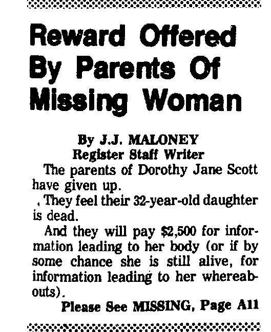

THE YEARS
New episodes are released every Tuesday.
Dorothy Jane Scott
In May 1980, Dorothy Jane Scott brought a coworker to the University of California Irvine Medical Center... and that's the last time anyone saw her.

Dorothy Jane Scott
Dorothy Jane Scott
Part II
After months of receiving terrifying phone calls from an anonymous caller, Dorothy Jane Scott was kidnapped in May 1980.
Wall Street Bombings
On September 16, 1920, an explosion went off at 23 Wall Street, killing 38 people and injuring hundreds more. But no one knew who set off the bomb, or why.

Mary S. Sherman
On July 21, 1964, a fire was reported at the Patio Apartments in New Orleans. The first responders found a disturbing scene... blood splattered on the walls, a burning mattress, and a lifeless body.

Mary S. Sherman
part II
World-renowned surgeon and cancer researcher Dr. Mary S. Sherman was found brutally murdered in her New Orleans apartment in 1964.